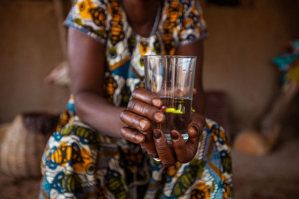
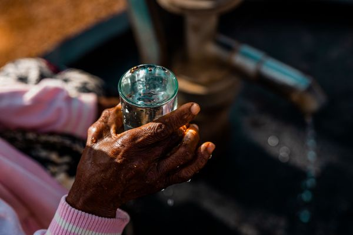

YOU GIVE
Your gift funds clean water projects for communities in need.
Clean Water Changes Everything
Every dollar you give brings clean water — and proof of it.
Invest in Clean Water

Your gift funds clean water projects for communities in need.

Our local partners plan, build, and train—sustainably and transparently.

We share updates and proof so you can see your impact with real data.